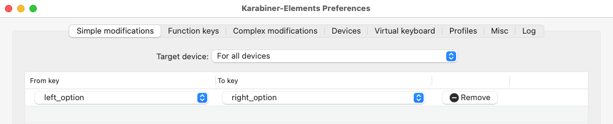

Instructions for installing Keyman.app and the Hebrew (SIL) keyboard on MacOS
Steps to install the keyboard for MacOS
Note: The following instructions are for the installation of Hebrew keyboard for Keyman.app on MacOS. If you need to type on Win or mobile devices, please follow the instructions above.
- You need to install Keyman on the Mac. Keyman is a free app.
- Go to the Keyman.app Download page.
- Click the "Download" button to download the Keyman installation file (.dmg file).
- Double click to open the file. In the new window, then double click the Keyman icon to start installation.
- Install the Hebrew (SIL) keyboard.
- Go to the Hebrew (SIL) keyboard Download page.
- Click the "macOS download" button to download the keyboard layout file (.kmp file).
- After download, you may double click to install the keyboard to Keyman.
- Make sure you have switched to "Keyman" as your keyboard input method.
- See screenshot below.
- If you don't have Keyman, you need to double check step 1.
- If you don't have "Hebrew SIL", you need to double check step 2.
- Done! You may start using it now! You may test your Hebrew typing at Hebrew Typing Test.
- This page also has some tips for typing Hebrew.
- NOTE: if you have issues typing Qamets Hatuph and Hateph Qamets (Hatuph), please restart your Mac to see if it is fixed. If not, please follow the instructions here and see if it can fix the issue.
Keyboard Layout
- Please visit this page to see the keyboard layout.
- You may also visit this page to view the keyboard layout (pp. 6–9).
- Note: We will use Keyman app to install the Hebrew (SIL) keyboard. We will not be using the SBL Hebrew keyboard. They have the same SIL layout, but the SBL Hebrew keyboard on Mac has different unicode character values for Sin and Shin. This
may cause some issues.
A Small Trick: remap L-Opt to R-Opt
- On Windows, we use Right Alt + O to type Qamets Hatuph, and Right Alt + Shift + A to type Hateph Qamets (Hatuph).
- On MacOS, similarly, we use Right Opttion + O to type Qamets Hatuph (◌ׇ), and Right Option + Shift + A to type Hateph Qamets (Hatuph) (◌ֲ). Left Option won't work.
- I'm very used to using Left Option instead of Right Option. I use Karabiner-Elements to remap Left Option to Right Option. Here is the setting:

- Note: If you use this setting, you won't be able to type Left Option anymore unless you remove this setting or quit Karabiner-Elements.
{kind=link}
{kind=link}